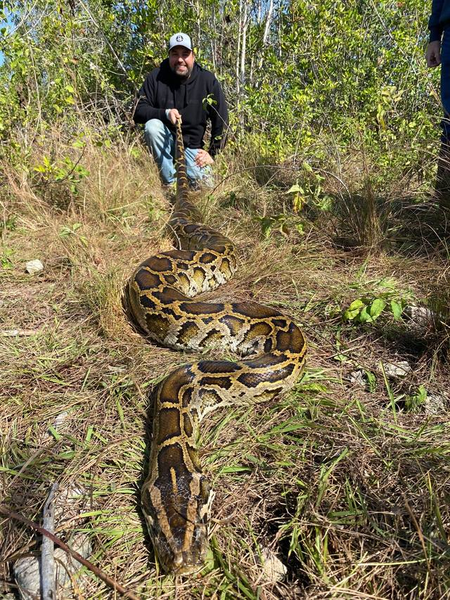

The rest of it
Hi, my name is Erik and as you check out my site, it is my hope and prayer that these words and pages both honor and glorify the Lord! I’ve had a rather unique career with my last 25 years being spent in the business of football or next to Tim Tebow, Chris Tomlin and Governor Ron DeSantis, respectively. I want to share a little bit about those experiences and there are two things that I hope you can feel as you check it out.
First, God uses unqualified people. I don’t think I’ve ever been qualified for a single role that I have done, but God is faithful and will take simple acts of obedience to get HIS work done.
Secondly, I was in Haiti years ago when a woman said to me, “you’ll never unsee what you’ve seen today”, and she was right, but more importantly, those words have become an anthem of my life. I believe each of us see, hear or experience moments, especially around the vulnerable and hurting, that never leave our mind and heart. Those moments will change the trajectory of my life and that is my story.
Galatians – boast in Christ
Stand in awe of God and help encourage others.